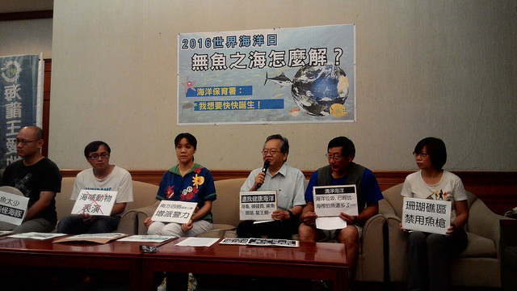

今年夏天，不平靜的海，綠島龍王鯛遭盜獵、澎湖大型硨磲貝被盜採、中國漁船越界採捕東沙國家公園生物，海龜觸網死傷，澎湖馬糞海膽濫捕剩不到十顆等等生態保育危機，再有蘭嶼飛魚季跟水上摩托車特訓的衝突；遠洋漁業去年收到歐盟IUU黃牌，正急修漁業三法；且有兩艘擱淺貨輪，耘海輪船體拆除作業中，德翔台北輪作業船調度中，兩者均需要至2~3個月以上時間處理，則勢必面臨颱風季的威脅。歸根究柢，海洋事務分散在22個部會，缺乏有系統的規劃與管理。
6月8日世界海洋日之前，環團與學者、跨藍綠多名立委今（6）日共同舉行記者會，呼籲新政府重視海洋，儘速成立海洋保育署，並希望蔡英文總統於任內第一個世界海洋日，公開給予台灣海洋堅定的守護承諾。
「呼籲政府兩年內成立海洋部，」立委陳曼麗說，海洋國家的台灣，反對海事不熟悉，現今的保護思維仍流於大陸性國家的想法，而一旦發生海污事件，環保署處理岸際，海裡卻沒有人要負責，顯見事權的不完整。又海洋空間幅員遼闊比起陸地面積三倍大，故希望成立海洋部作為事權統一的單位，並強調其屬專業領域，專業人員應占一半以上比例。
立委蔣萬安則表示，近日有環保人士拿著漁網來陳情，除流刺網將大中小魚一網打盡極具殺傷力，違法濫用又任意丟棄，下沉到海底覆蓋珊瑚礁、或給海洋生物帶來二次傷害。國外的流刺網則設有標記可追蹤，使用上亦有規範，台灣有五個縣市（新北市、基隆市、澎湖縣、屏東縣、高雄縣）已在三海浬內禁用三層流刺網，然執法的落實仍是最大的問題。
而在海洋文化、產業發展層面，立委趙天麟表示，長期行政機關淺碟式政策，加上教育養成不足，蘭嶼、綠島造成喧騰的事件，尤其肇因慣以漢人、本土陸地為思考中心。生態保育、部落文化之於商業、觀光的衝突，台灣身為遠洋漁業重鎮但沿近海漁業枯竭，原漢經濟海域的競爭等現況，亟需由海洋視角出發的上位機關謀求發展治理的平衡點。
上星期提出「海洋部組織法」的立委姚文智則補充脈絡，早從1996年即有主張海洋國家當成立海洋部，2000年為海洋事務部，2008年政府更喊出「藍色革命、海洋興國」的口號，迄今組織尚不健全，決定再提「海洋部」期一次到位，若遇阻礙，至少在這一屆會期或兩年內，俾使海洋保育署順利成立。
曾擔任高雄市海洋局局長的立委賴瑞隆說，走在前面、唯一成立海洋局的高雄，從地方到中央，常遇到沒有對口的困境，海洋事務分散各部會資源有限，因此，組織架構上由最高格局的海洋部來統籌海事，絕對是當務之急。賴瑞隆亦提醒，海洋部不該只限於管制性質，應在環境保育、永續發展、科技研發、漁業資源、觀光休閒、藍色經濟等各方面做出努力。